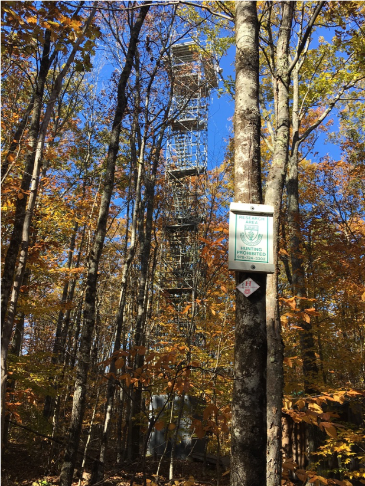

When in academia, my research focused on ecosystem ecology and how the role of plants in their ecosystems are shifting under and impacting global climate change. I am still interested in the role of plants and soil in the carbon and water cycles. My previous research focused heavily on phenology. Below are some of my previous research projects.
Leaf Phenology and Soil Properties
As the global climate changes, it is becoming more important to understand the uncertain role that the terrestrial biosphere has on carbon storage. Since warmer temperatures affect the timing of phenology transitions in plants, plant phenology is a primary ecological indicator of climate change. Furthermore, how sensitive phenology transitions are to different drivers (e.g., temperature, photoperiod, water availability, leaf age limitations) is highly variable and depends on species and latitude. Without understanding how sensitive phenology is to drivers, we cannot make accurate predictions of phenology and, thus, annual primary productivity.
In my postdoctoral fellowship work, I was interested in how various soil properties including carbon to nitrogen ratios, soil moisture, and soil fungi called mycorrhizae impact phenology. Over 80% of plant species associate with soil fungi called mycorrhizae, which increase access to limiting resources such as nutrients (e.g., nitrogen, N) and water. Soil microbes (e.g., mycorrhizae fungi) significantly impact plant phenology events (e.g., flowering) in over 88% of published studies, but their effect on leaf phenology is rarely studied (O'Brien et al., 2021, Am. J. Bot). I investigated if mycorrhizae association of plants affects the sensitivity of leaf phenology in plants to environmental drivers and the resultant carbon fluxes.

Modeling Senescence
Phenology models, especially ones of autumnal processes like senescence, are typically based on correlations between environmental threshold triggers and transition dates and less is known about the specific mechanisms behind phenological events. It is unclear if a start of senescence (SOS) trigger is needed in mechanistic models and if decreased photosynthesis drives senescence. In my PhD, I developed a dynamic Bayesian model based on the physiological process of chlorophyll cycling that assumes a constant chlorophyll breakdown rate and synthesis dependent on temperature and photoperiod to predict senescence without including a SOS trigger or degree-day memory. I fit the model to greenness time series from 24 PhenoCam sites and found that for 49% of the site-years the model could predict SOS using only pre-SOS data. Furthermore, the model could regularly predict greenness at other sites better than their climatologies. I also investigated if including photosynthetic feedbacks could improve the chlorophyll synthesis model at the canopy and leaf-levels. Testing this against leaf-level measurements of photosynthetic capacity and changes in chlorophyll concentrations of Fagus grandifolia and Quercus rubra, which I collected through field work at Harvard Forest, MA, demonstrated that the model fit improved at the canopy level, but not at the leaf-level.

Remote Sensing of Phenology
Higher temporal resolution satellite data is needed to continue to identify the mechanisms at larger scales. I created and published a novel statistical model to estimate daily NDVI with uncertainty from high temporal resolution (five – ten minutes) Geostationary Operational Environmental Satellite (GOES) -16 and -17 data. I also used this data to track forest phenology by fitting double-logistic Bayesian models and comparing transition dates to those obtained from PhenoCams (digital cameras) and the Moderate Resolution Imaging Spectroradiometer (MODIS). Compared to MODIS, GOES was more correlated with PhenoCam at the start and middle of spring.
For my undergraduate thesis, I assessed how well hyperspectral indices in the visible and near-infrared wavelengths predict nitrogen concentrations in lower-canopy leaves in the autumn phenological transition as they are generally understudied in leaf trait research.
Leaf Phenology and Ecohydrology
In autumn, the dissolved organic matter (DOM) contribution of leaf litter leachate to streams in forested watersheds changes as trees undergo resorption, senescence, and leaf abscission. Despite its biogeochemical importance, little work has investigated how leaf litter leachate DOM changes throughout the autumn and how any changes might differ interspecifically and intraspecifically. I examined changes in leaf litter leachate fluorescent DOM from American beech leaves in Maryland, Rhode Island, Vermont, and North Carolina and from yellow poplar leaves from Maryland. I created a six-component parallel factor analysis (PARAFAC) model to identify components that accounted for the majority of the variation in the data set and used self-organizing maps to compare the PARAFAC component proportions of leachate samples.